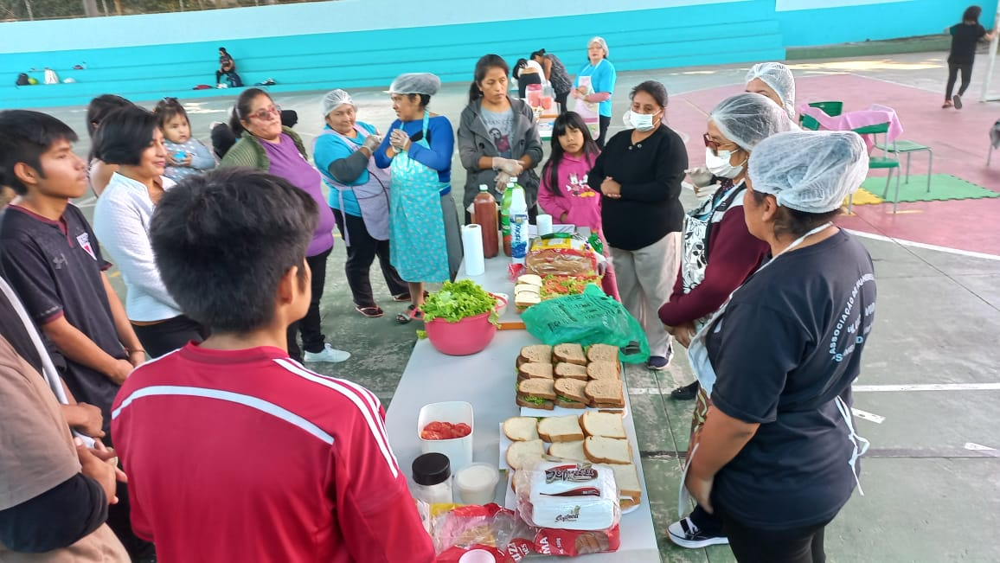
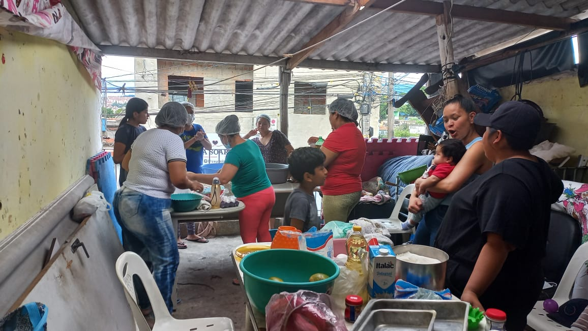
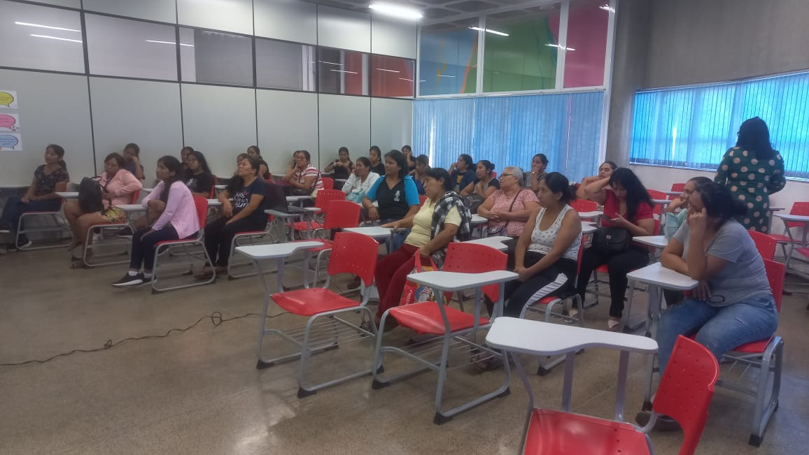

Como sua ajuda vira acolhimento
Doações, materiais e apoio voluntário ajudam a manter encontros, aulas e ações de assistência. Cada contribuição fortalece a rede de cuidado e proteção da comunidade.
A AMILV emprega tempo e recursos próprios para manter uma associação sem fins lucrativos e ampliar o acolhimento.

>
>
Você pode contribuir com doações, materiais, divulgação, trabalho voluntário ou uma habilidade profissional. Como ainda não temos um canal de doação confirmado, entre em contato para saber como apoiar.
Entre em contatoDoações, materiais e apoio voluntário ajudam a manter encontros, aulas e ações de assistência. Cada contribuição fortalece a rede de cuidado e proteção da comunidade.
Mesmo pequenas ações se tornam grandes impactos quando são compartilhadas por pessoas que acreditam em autonomia, educação e dignidade para mulheres imigrantes.